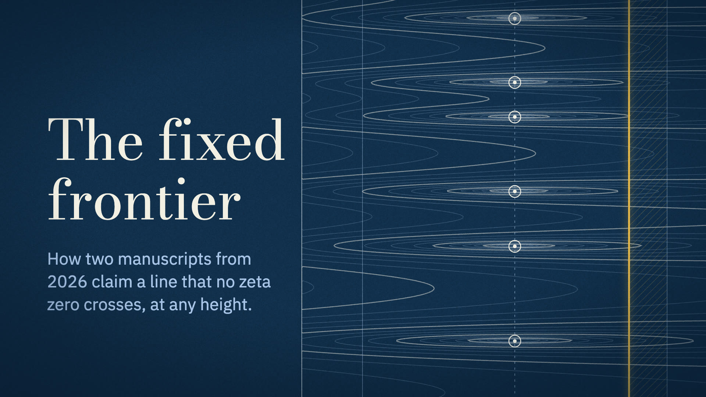
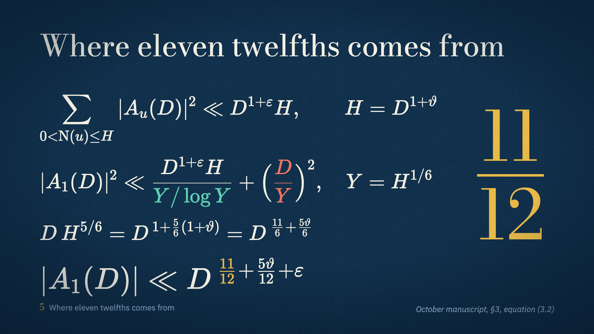
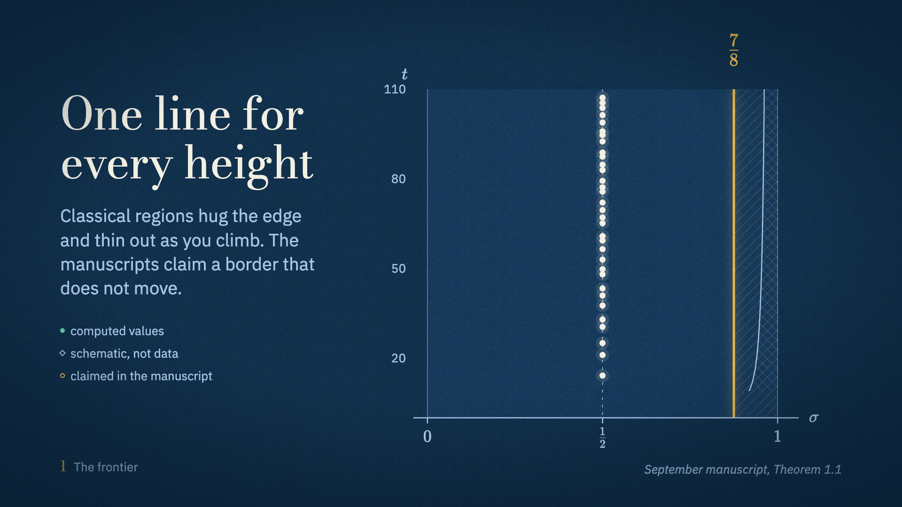
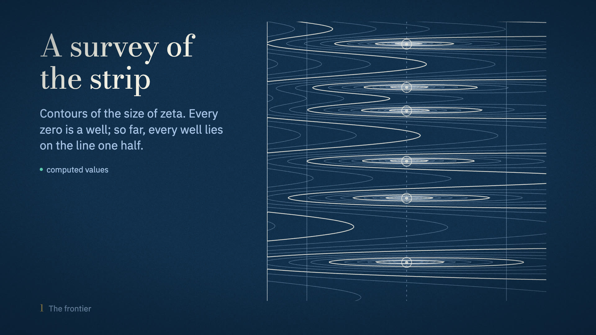
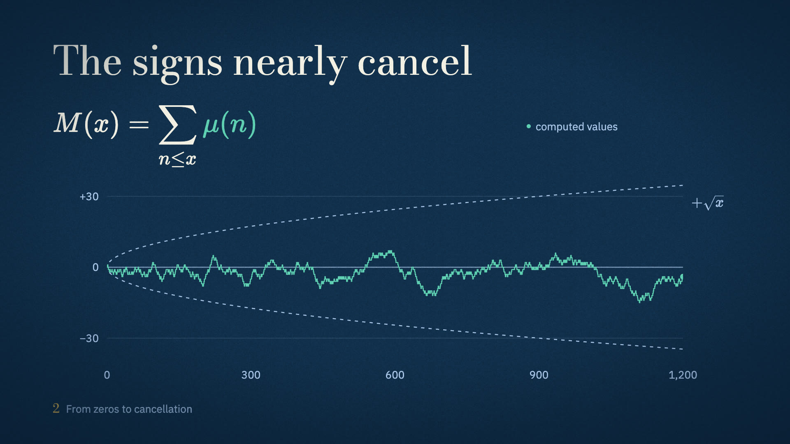
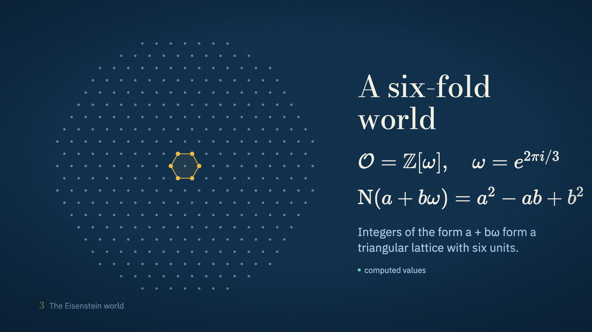

<title>Fixed Frontier Mood Board</title>
<meta name="claude:viewport-fit-sides" content="cover">
<link rel="preconnect" href="https://fonts.googleapis.com">
<link rel="preconnect" href="https://fonts.gstatic.com" crossorigin>
<link rel="stylesheet" href="https://fonts.googleapis.com/css2?family=Bodoni+Moda:ital,opsz,wght@0,6..96,400;0,6..96,500;1,6..96,400&family=IBM+Plex+Sans:ital,wght@0,400;0,500;1,400&display=swap">
<style>
/* Layout: one reading column of film frames, each followed by the rule it demonstrates. Single dark look, same inks as the film. */
:root {
  --field: #12304D;
  --field-deep: #0A1F35;
  --field-lift: #1B4068;
  --paper: #F3EFE4;
  --mist: #A9C4E8;
  --gilt: #E9B949;
  --verdigris: #5FCFB2;
  --ember: #F07563;
  --rule: rgba(169, 196, 232, 0.28);
  --display: "Bodoni Moda", "Didot", "Bodoni 72", Georgia, serif;
  --text: "IBM Plex Sans", "Helvetica Neue", Arial, sans-serif;
  color-scheme: dark;
}
* { box-sizing: border-box; }
body {
  margin: 0;
  background: radial-gradient(ellipse 120% 60% at 50% 0%, var(--field) 0%, var(--field-deep) 100%) fixed, var(--field-deep);
  color: var(--paper);
  font: 400 18px/1.6 var(--text);
}
.page {
  max-width: 1180px;
  margin: 0 auto;
  padding-block: 72px 120px;
  padding-left: max(16px, env(safe-area-inset-left, 0px));
  padding-right: max(16px, env(safe-area-inset-right, 0px));
  display: grid;
  gap: 96px;
}
h1, h2, h3 { font-family: var(--display); font-weight: 400; text-wrap: balance; margin: 0; }
h1 { font-size: clamp(48px, 8vw, 104px); line-height: 1.02; letter-spacing: -0.01em; }
h2 { font-size: clamp(32px, 4.4vw, 52px); line-height: 1.08; }
h3 { font-size: 26px; line-height: 1.2; }
p { margin: 0; max-width: 66ch; }
.lead { font-size: 21px; color: var(--mist); }
.muted { color: var(--mist); }
section { display: grid; gap: 28px; min-width: 0; }
figure { margin: 0; display: grid; gap: 12px; min-width: 0; }
figure img, figure video { width: 100%; max-width: 100%; height: auto; display: block; aspect-ratio: 16 / 9; border-radius: 3px; background: var(--field-deep); }
figcaption { font-size: 15px; color: var(--mist); max-width: 70ch; }
.hero { display: grid; gap: 28px; }
.frames { display: grid; grid-template-columns: repeat(2, minmax(0, 1fr)); gap: 40px 32px; }
.inks { display: grid; grid-template-columns: repeat(4, minmax(0, 1fr)); gap: 0; border-top: 1px solid var(--rule); }
.ink { padding: 18px 16px 22px 0; border-bottom: 1px solid var(--rule); display: grid; gap: 10px; align-content: start; min-width: 0; }
.chip { height: 72px; border-radius: 2px; border: 1px solid var(--rule); }
.ink b { font-weight: 500; font-size: 17px; }
.ink code { font: 400 14px/1.4 var(--text); color: var(--mist); font-variant-numeric: tabular-nums; }
.ink span { font-size: 15px; color: var(--mist); }
.types { display: grid; grid-template-columns: repeat(3, minmax(0, 1fr)); gap: 32px; }
.type { display: grid; gap: 12px; align-content: start; border-top: 1px solid var(--rule); padding-top: 18px; min-width: 0; }
.specimen-display { font-family: var(--display); font-size: 44px; line-height: 1.05; }
.specimen-text { font-family: var(--text); font-size: 28px; line-height: 1.25; }
.frac { display: inline-flex; flex-direction: column; align-items: center; font-family: var(--display); color: var(--gilt); font-size: 64px; line-height: 1; vertical-align: middle; margin-left: 18px; }
.frac i { display: block; width: 100%; min-width: 40px; height: 2px; background: var(--gilt); margin: 4px 0; }
.scale { display: flex; flex-wrap: wrap; align-items: baseline; gap: 6px 22px; color: var(--mist); font-variant-numeric: tabular-nums; }
.rules { list-style: none; margin: 0; padding: 0; display: grid; grid-template-columns: repeat(2, minmax(0, 1fr)); gap: 0 40px; }
.rules li { padding: 16px 0; border-bottom: 1px solid var(--rule); min-width: 0; }
.rules li strong { font-weight: 500; display: block; margin-bottom: 4px; }
.rules li span { color: var(--mist); font-size: 16px; }
.tags { display: flex; flex-wrap: wrap; gap: 14px 28px; font-size: 16px; color: var(--mist); }
.tag { display: inline-flex; align-items: center; gap: 10px; }
.tag::before { content: ""; width: 9px; height: 9px; border: 2px solid; border-radius: 50%; }
.tag.computed::before { border-color: var(--verdigris); background: var(--verdigris); }
.tag.schematic::before { border-color: var(--mist); border-radius: 0; transform: rotate(45deg); }
.tag.claim::before { border-color: var(--gilt); }
.acts { display: grid; grid-template-columns: repeat(4, minmax(0, 1fr)); gap: 24px; counter-reset: act; }
.act { border-top: 2px solid var(--gilt); padding-top: 14px; display: grid; gap: 6px; align-content: start; min-width: 0; }
.act h3 { font-size: 24px; }
.act p { font-size: 15px; color: var(--mist); }
.act .time { font-size: 14px; color: var(--gilt); font-variant-numeric: tabular-nums; }
a { color: var(--gilt); }
a:focus-visible { outline: 2px solid var(--gilt); outline-offset: 3px; }
@media (max-width: 860px) {
  .frames, .types, .rules, .acts { grid-template-columns: minmax(0, 1fr); }
  .inks { grid-template-columns: repeat(2, minmax(0, 1fr)); }
}
@media (prefers-reduced-motion: reduce) { video { display: none; } .reduced-still { display: block !important; } }
</style>

<main class="page">
  <header class="hero">
    <h1>The fixed frontier</h1>
    <p class="lead">Mood board for the second edition of the Quasi-Riemann explainer. Every frame below was rendered by the film's own components from the tokens on this page; a lint step rejects any color or typeface that is not listed here.</p>
    <figure>
      <video src="frames/MoodTitle.mp4" poster="frames/MoodTitle.jpg" autoplay muted loop playsinline aria-label="Title card animation: contour survey of zeta with the gilt frontier rising at seven eighths"></video>
      
      <figcaption>Title card. The background is a topographic survey of log |ζ(σ + it)| computed at 56,541 points; each zero is a well on the line one half, and the gilt frontier rises at σ = 7/8.</figcaption>
    </figure>
  </header>

  <section>
    <h2>A cyanotype survey of the critical strip</h2>
    <p>Cyanotype is the Prussian-blue printing process John Herschel invented in 1842, the one behind engineers' blueprints and the first photographically illustrated science books. The film prints in it. The critical strip is treated as territory under survey: zeros are soundings, proven zero-free ground is hatched the way a map hatches charted land, and the manuscripts' claim is a single gilt line that holds at every height.</p>
    <p class="muted">The first edition used a near-black slide template with a header and disclaimer on every frame. This edition removes that chrome and puts the information where it applies: a source citation on the frames that state a claim, and a tag beside each figure saying what kind of picture it is.</p>
  </section>

  <section>
    <h2>Inks</h2>
    <p class="muted">Five neutrals and three accents. Each accent has one job for the whole film and is never used for anything else.</p>
    <div class="inks">
      <div class="ink"><div class="chip" style="background:var(--field)"></div><b>Field</b><code>#12304D</code><span>The exposed ground of every frame.</span></div>
      <div class="ink"><div class="chip" style="background:var(--field-deep)"></div><b>Deep field</b><code>#0A1F35</code><span>Vignette edge.</span></div>
      <div class="ink"><div class="chip" style="background:var(--field-lift)"></div><b>Lifted field</b><code>#1B4068</code><span>The critical strip; anything that must sit forward.</span></div>
      <div class="ink"><div class="chip" style="background:var(--paper)"></div><b>Paper</b><code>#F3EFE4</code><span>Primary ink: text, geometry, zeros.</span></div>
      <div class="ink"><div class="chip" style="background:var(--mist)"></div><b>Mist</b><code>#A9C4E8</code><span>Secondary ink: axes, captions, citations.</span></div>
      <div class="ink"><div class="chip" style="background:var(--gilt)"></div><b>Gilt</b><code>#E9B949</code><span>The frontier and the claim: 11/12, 7/8, the target sum.</span></div>
      <div class="ink"><div class="chip" style="background:var(--verdigris)"></div><b>Verdigris</b><code>#5FCFB2</code><span>Arithmetic: primes, characters, Möbius signs.</span></div>
      <div class="ink"><div class="chip" style="background:var(--ember)"></div><b>Ember</b><code>#F07563</code><span>Obstruction: poles, contradictions, error terms.</span></div>
    </div>
    <p class="muted">The three accents were run through a palette validator against the field: worst color-blind separation ΔE 10.7 (deuteranopia, target 8), worst normal-vision separation ΔE 17.3, every accent above 3:1 contrast. They sit brighter than a UI chart palette on purpose, because on a lit blue field they act as luminous ink.</p>
  </section>

  <section>
    <h2>Type</h2>
    <div class="types">
      <div class="type">
        <h3>Bodoni Moda</h3>
        <div class="specimen-display">The proof in four moves <span class="frac">11<i></i>12</span></div>
        <p class="muted">Titles, and the stacked fractions the story is about. Didone faces set most mathematics printed in Riemann's lifetime.</p>
      </div>
      <div class="type">
        <h3>IBM Plex Sans</h3>
        <div class="specimen-text">Count, divide, take a root</div>
        <p class="muted">Everything read rather than looked at: labels, captions, axis numbers in tabular figures.</p>
      </div>
      <div class="type">
        <h3>KaTeX</h3>
        <figure></figure>
        <p class="muted">All mathematics is typeset. Plain-text exponents such as D^(5/6) cannot appear.</p>
      </div>
    </div>
    <div class="scale" aria-label="Type scale in pixels at 1080p">
      <span>Scale at 1080p:</span><span>22</span><span>26</span><span>30</span><span>38</span><span>46</span><span>64</span><span>96</span><span>150</span>
    </div>
  </section>

  <section>
    <h2>Diagram vocabulary</h2>
    <div class="frames">
      <figure>
        
        <figcaption>The survey map. Zeros are computed; the classical region uses the published constant 1/5.573 (Mossinghoff and Trudgian), which is why it is only a sliver beside σ = 1; the claimed region is hatched in gilt.</figcaption>
      </figure>
      <figure>
        
        <figcaption>The topographic survey. Index contours in paper, others in mist. It returns whenever the film talks about where zeros can be.</figcaption>
      </figure>
      <figure>
        <video src="frames/MoodProofMap.mp4" poster="frames/MoodProofMap.jpg" autoplay muted loop playsinline aria-label="Proof map animation"></video>
        <figcaption>The proof as a traverse: four stations to 11/12, the engine as a shaft under station 2, the 7/8 route branching from the end. Each deep-dive chapter opens on this map with its station lit.</figcaption>
      </figure>
      <figure>
        <video src="frames/MoodEquation.mp4" poster="frames/MoodEquation.jpg" autoplay muted loop playsinline aria-label="Equation animation"></video>
        <figcaption>Equations develop line by line and light term by term, cued to the narrator's words, in the ink of each term's role: the count of copies in verdigris, the error in ember, 11/12 in gilt.</figcaption>
      </figure>
      <figure>
        
        <figcaption>Data plots. Computed series in verdigris, guides dashed in mist, tick labels outside the plot so the data never runs through them.</figcaption>
      </figure>
      <figure>
        
        <figcaption>Arithmetic settings drawn exactly: the Eisenstein integers and their six units, which is where the sixfold symmetry of the argument comes from.</figcaption>
      </figure>
    </div>
  </section>

  <section>
    <h2>Rules every frame follows</h2>
    <ul class="rules">
      <li><strong>The bottom band is reserved</strong><span>Chapter locator at left, source citation at right. Nothing else goes there.</span></li>
      <li><strong>One title per scene, left-aligned</strong><span>Set in Bodoni on the 128 px margin.</span></li>
      <li><strong>No boxes or cards</strong><span>Structure comes from lines, stations, rules and hatching.</span></li>
      <li><strong>Every figure says what it is</strong><span>A tag beside it: computed values, schematic, or claimed in the manuscript.</span></li>
      <li><strong>Every claim names its source</strong><span>Paper and place, for example: October manuscript, §3, equation (3.2).</span></li>
      <li><strong>Color means one thing</strong><span>Gilt never decorates; if it appears, it is the frontier, the claim, or the target.</span></li>
    </ul>
    <div class="tags"><span class="tag computed">computed values</span><span class="tag schematic">schematic, not data</span><span class="tag claim">claimed in the manuscript</span></div>
  </section>

  <section>
    <h2>Motion</h2>
    <ul class="rules">
      <li><strong>Exposure</strong><span>Elements develop from a soft mist silhouette to sharp ink over 0.6 s, the way a print develops.</span></li>
      <li><strong>Drawn strokes</strong><span>Lines draw on over 0.8 s; frontiers rise from the axis.</span></li>
      <li><strong>Cued to the narration</strong><span>Each reveal is tied to a word in the ElevenLabs timestamps, not to a clock.</span></li>
      <li><strong>One easing family</strong><span>Timings in beats of 0.4 s. Maps may drift slowly; nothing else moves idly, and the grain is fixed.</span></li>
    </ul>
  </section>

  <section>
    <h2>Shape of the film</h2>
    <p class="muted">About twenty minutes, narrated by Sarah. The outline comes first and the pieces follow, as in the first edition.</p>
    <div class="acts">
      <div class="act"><span class="time">about 1 min</span><h3>A border that shrinks</h3><p>1859 to now: every proven zero-free region thins toward σ = 1 as you climb. Then the claim of a fixed line.</p></div>
      <div class="act"><span class="time">about 3 min</span><h3>The proof in four moves</h3><p>Cancellation, a family, copies from sixth powers, and the count that gives 11/12. Then the engine and the 7/8 route.</p></div>
      <div class="act"><span class="time">about 13 min</span><h3>The pieces</h3><p>Ten chapters, each opening on the proof map with its station lit, from Euler's product to the shrinking recursion and the bootstrap to 7/8.</p></div>
      <div class="act"><span class="time">about 3 min</span><h3>What it would mean</h3><p>Primes in progressions, Vinogradov's least-nonresidue conjecture, deterministic square roots mod p, and the distance still left to one half.</p></div>
    </div>
  </section>
</main>
